/* rineke-dijkstra - proofs */
12 plates. Deterministic overlays rendered by the composition-analysis skill.
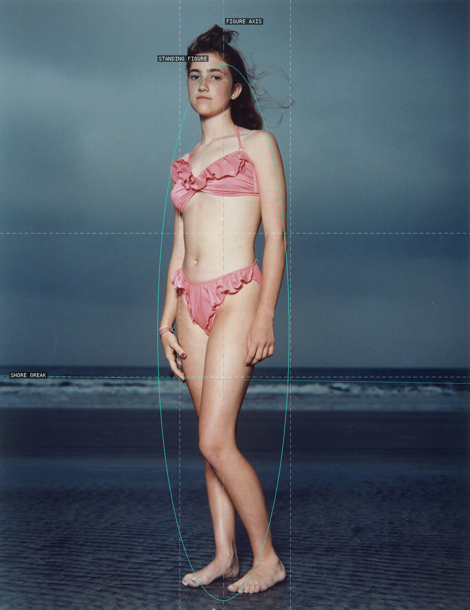
01-hilton-head-june-22-1992
A frontal figure occupies a spare vertical field, with the low shore break giving the pose a ground.
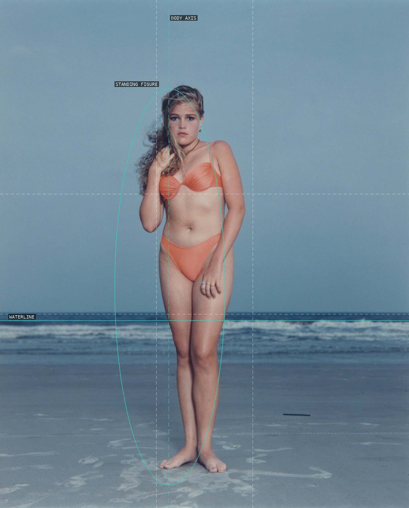
02-hilton-head-june-24-1992
The low waterline and near-central body make the raised hand and uneven shoulders visible as small departures.
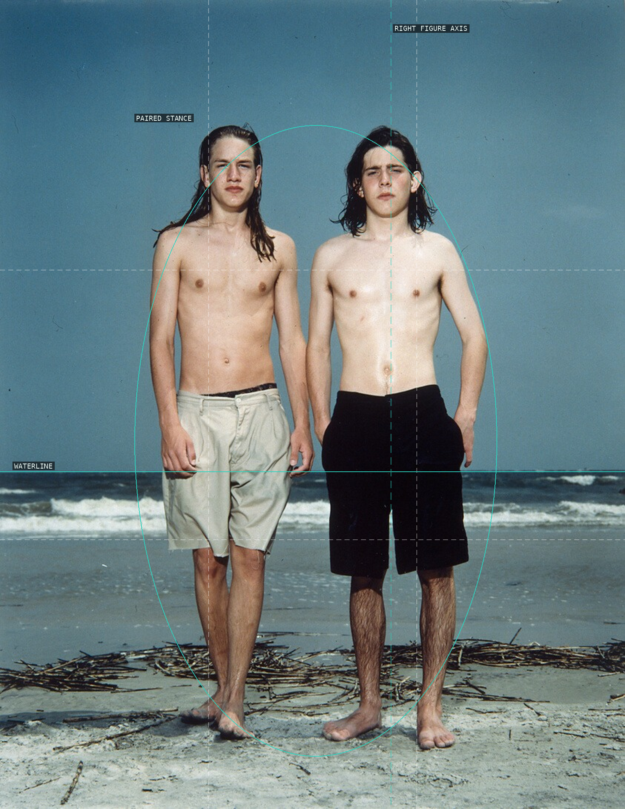
03-hilton-head-june-27-1992
A pair of near-frontal bodies turns a repeated beach frame into a measured comparison of stance.
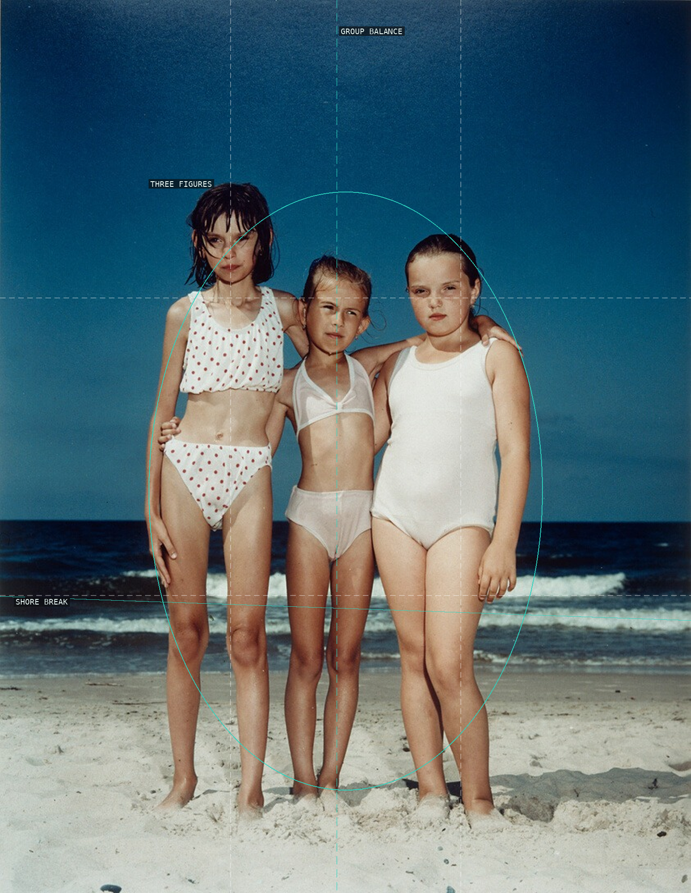
04-kolobrzeg-july-23-1992
Three differently scaled children are held as a compact band above the low, angled shore.
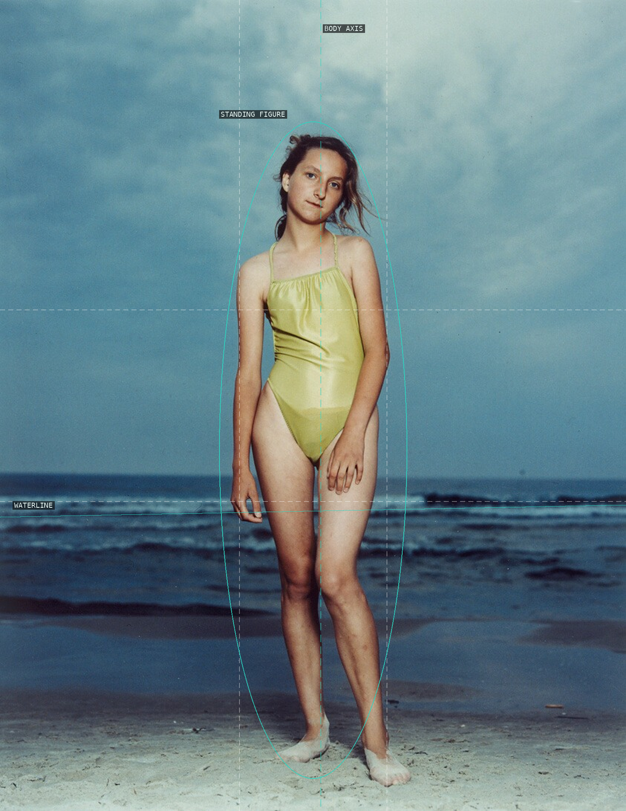
05-kolobrzeg-july-26-1992
The frame offers a central figure and broad sky, making the head tilt and crossed legs do the expressive work.
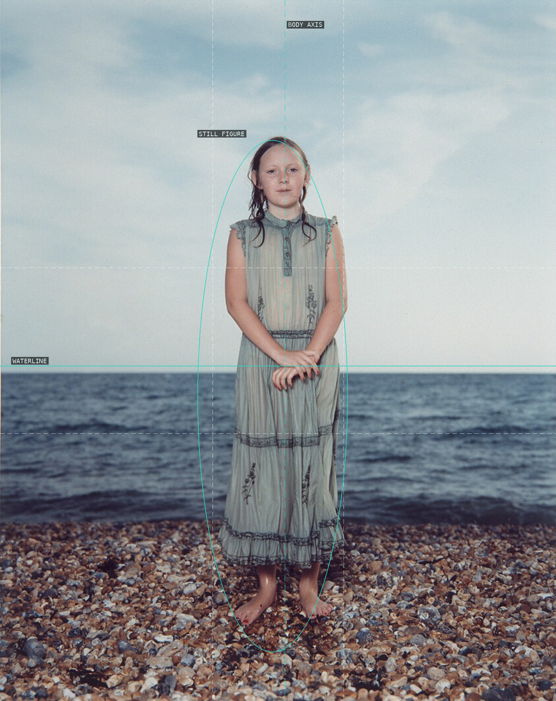
06-brighton-august-21-1992
Crossed hands and a central body make stillness legible against a textured shore and open sky.
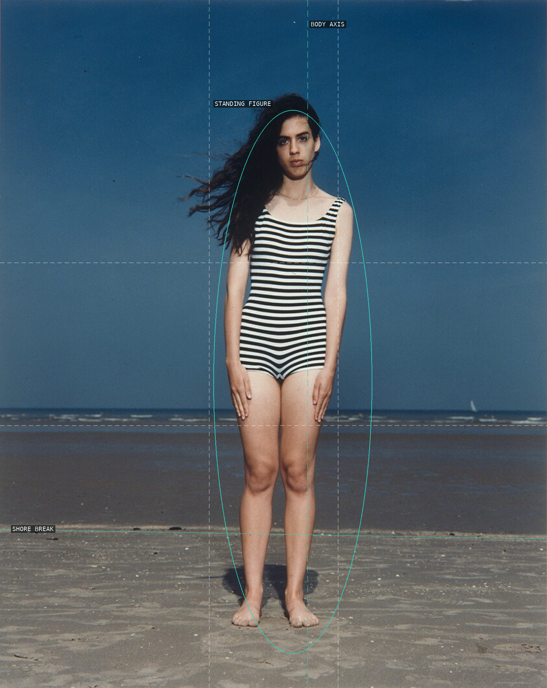
07-de-panne-august-7-1992
A central, vertical body is unsettled by wind-blown hair and a slight lean, all above a low shore band.
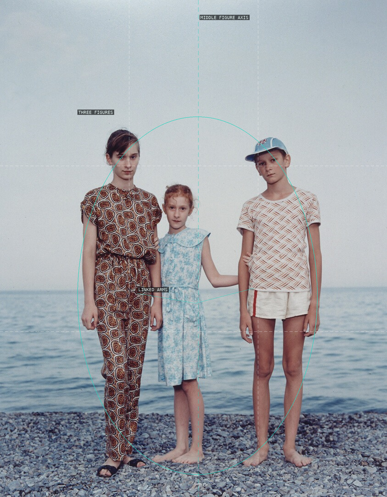
08-jalta-july-30-1993
The middle child and linked arms bind a three-person row without making its unequal poses symmetrical.
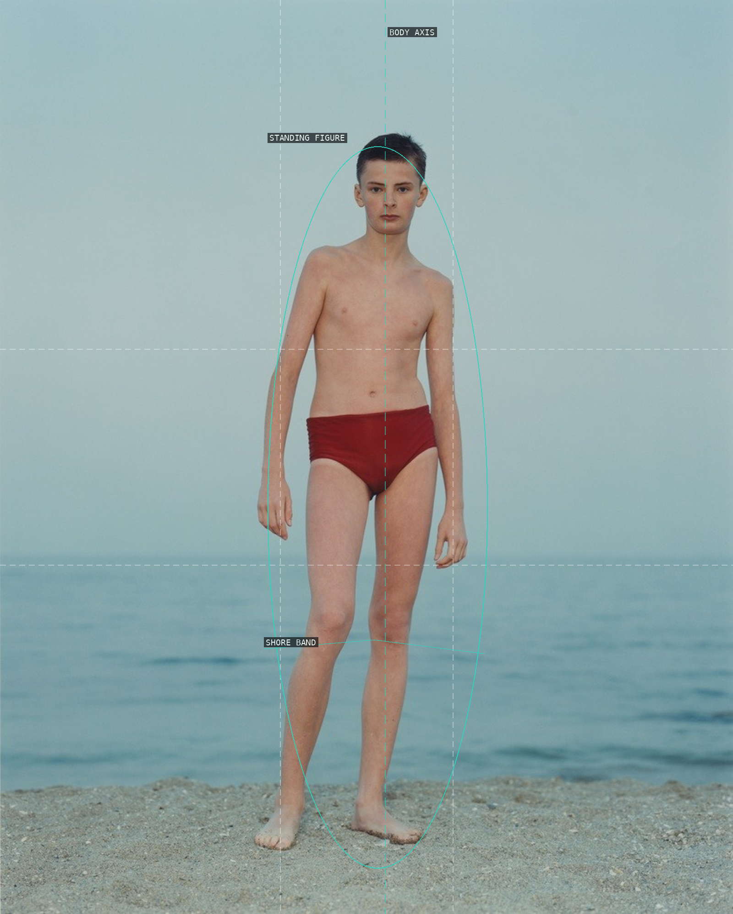
09-odessa-august-4-1993
A nearly centered body is held against expansive pale water, concentrating attention on the asymmetry of its stance.
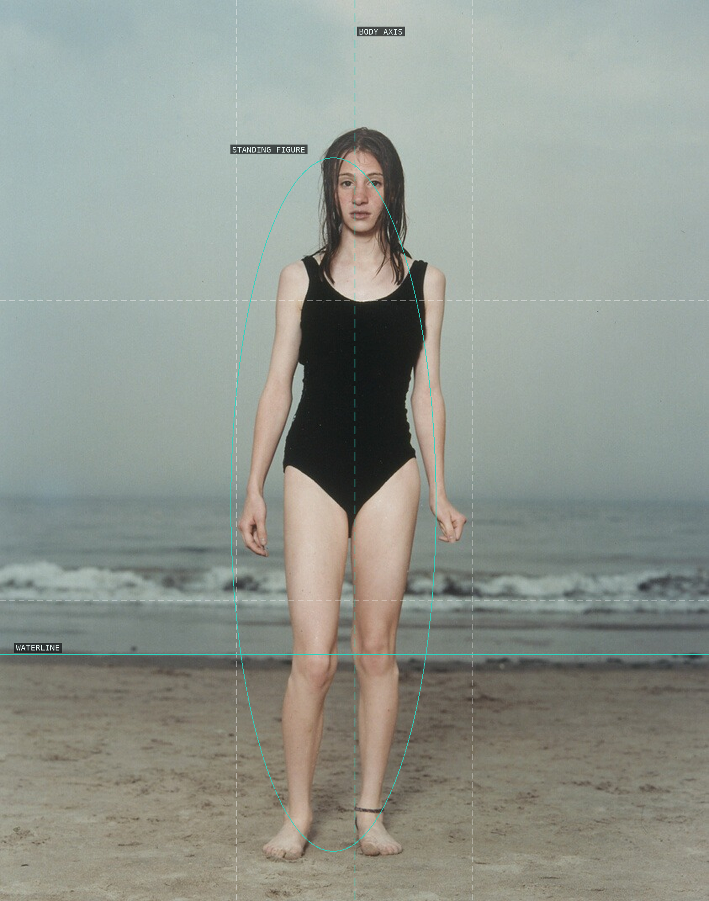
10-coney-island-june-20-1993
A frontal figure occupies a restrained beach field; the low waterline makes each arm and foot placement readable.
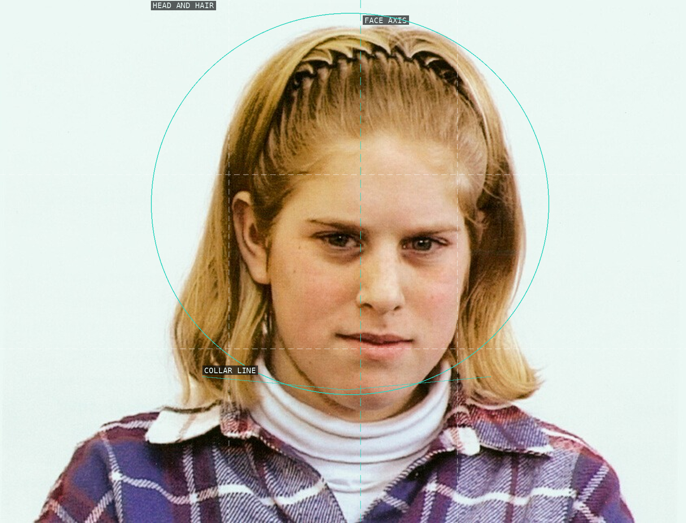
11-annemiek-february-11-1997
The close crop gives a face and collar a near-symmetrical field while preserving a subtly uneven expression.
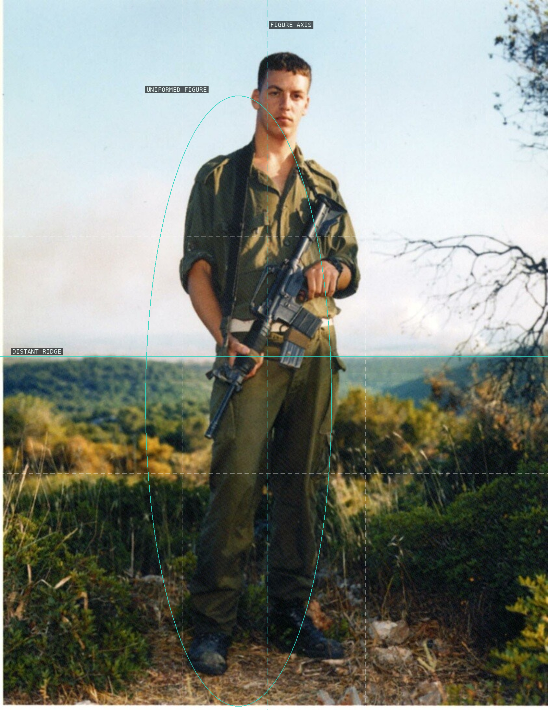
12-amit-golani-brigade-1999
The upright uniformed figure is held against a low ridge, with the rifle creating a visible diagonal counterweight.